Computer-Aided Manufacturing (CAM) involves the use of software and computer-controlled machinery to automate the manufacturing process.
CAM systems convert design data, often created using CAD (Computer-Aided Design) software, into instructions for computer-controlled machinery,
such as CNC (Computer Numerical Control)machines, to produce physical components.
Key Features of CAM
1. CNC Programming:
· CAM software generates G-code or other machine-specific code that directs CNC machines on how to move and process materials.
· This programming involves specifying tool paths, cutting speeds, and other machining parameters.
2. Simulation and Visualization:
· CAM systems often include simulation tools that allow users to visualize the machining process and detect potential issues, such as collisions or tool errors, before actual production.
3. Tool Path Generation:
· CAM software calculates optimal tool paths for various machining operations, including milling, turning, drilling, and cutting.
· Efficient tool paths help minimize machining time and material waste.
4. Material Optimization:
· CAM systems can optimize material usage, reducing waste and costs by arranging parts in a way that maximizes the use of raw materials.
5. Automation:
· CAM automates repetitive manufacturing tasks, increasing efficiency and consistency while reducing human error.
6. Integration with CAD:
· CAM software often integrates seamlessly with CAD systems, allowing for a smooth transition from design to manufacturing.
· This integration ensures that design changes are accurately reflected in the manufacturing process.
Computer-Aided Design (CAD) is the use of computer software to facilitate the creation, modification, analysis, or optimization of a design.
CAD software is used to increase the productivity of the designer, improve the quality of design, improve communications through documentation,
and to create a database for manufacturing.
Key Features of CAD
1. 2D and 3D Design:
· CAD software allows for both two-dimensional (2D) and three-dimensional (3D) modeling.
· 2D CAD is used for creating flat drawings of products, buildings, or parts.
· 3D CAD allows for the creation of three-dimensional representations, providing a more realistic view of the final product.
2. Precision and Accuracy:
· CAD software provides tools for creating precise dimensions and geometries.
· It enables designers to work with minute details and ensures high accuracy in measurements and specifications.
3. Simulation and Analysis:
· CAD software often includes simulation tools to test how a design will perform under various conditions.
· This helps in identifying potential issues and optimizing the design before physical prototypes are made.
4. Automation:
· CAD systems can automate repetitive tasks, such as creating standard components and generating documentation.
· It improves efficiency and reduces the likelihood of errors.
5. Visualization:
· CAD allows for realistic rendering and visualization of the design.
· Designers can create virtual prototypes and explore different materials, colors, and finishes.
6. Integration with CAM:
· CAD is often integrated with Computer-Aided Manufacturing (CAM) systems.
· This integration allows for seamless transition from design to manufacturing, improving workflow and reducing time to market.
CNC Turning Programming refers to the process of creating instructions for CNC (Computer Numerical Control)
lathes and turning centers to machine cylindrical parts. CNC turning involves the use of a rotating workpiece
and stationary cutting tools to remove material and create precise shapes and features.
Key Concepts in CNC Turning Programming
1. G-Code and M-Code:
· G-Code: The programming language used to control CNC machines. It includes commands for motion, tool changes, and other functions.
· M-Code: Miscellaneous codes that control auxiliary functions such as spindle on/off, coolant on/off, and program stop/start.
2. Coordinate Systems:
· Machine Coordinate System: The fixed coordinate system of the CNC machine.
· Work Coordinate System: The coordinate system defined by the programmer relative to the workpiece.
3. Tool Paths:
· The sequence of movements that the cutting tool follows to machine the workpiece. This includes linear (G01) and circular (G02/G03) interpolation commands.
4. Cutting Parameters:
· Spindle Speed (S): The speed at which the workpiece rotates, typically measured in RPM (revolutions per minute).
· Feed Rate (F): The speed at which the cutting tool moves along the workpiece, typically measured in inches per minute (IPM) or millimeters per minute (mm/min).
5. Tool Offsets:
· Adjustments made to account for the actual position and size of the cutting tools. This ensures accurate machining.
6. Canned Cycles:
· Pre-programmed sequences of operations for common tasks such as drilling, boring, and threading.
· Canned cycles simplify programming by reducing the number of lines of code needed.
Plastic mold design is a detailed and complex process that involves creating the mold or tooling required to produce plastic parts through various molding techniques,
such as injection molding, blow molding, rotational molding, and others.
Here are the key details to consider in plastic mold design.
1. Mold Types:
·Injection Molds: Used for injection molding, the most common type of plastic manufacturing. It creates parts by injecting molten plastic into the mold cavity.
·Blow Molds: Used for blow molding, typically for hollow objects like bottles.
·Compression Molds: Used for thermosetting plastics, where material is placed in a heated mold cavity, then compressed to form a part.
·Rotational Molds:Used for rotational molding, suitable for large, hollow parts like tanks and containers.
2. Material Selection:
·Mold Material: The choice of mold material depends on the type of plastic, the production volume, and the complexity of the design. Common materials include tool steel, aluminum, and beryllium copper.
·Plastic Material: The plastic material (e.g., polypropylene, ABS, nylon, etc.) must be selected based on the part's requirements, such as strength, flexibility, temperature resistance, and chemical compatibility.
3. Mold Design Components:
·Cavity and Core: The cavity is the void that gets filled with molten plastic, while the core forms the internal surfaces of the part.
·Gates: These are the channels through which molten plastic enters the mold cavity. Gate design affects the flow, filling, and final quality of the part.
·Runners: Runners guide the plastic material from the injection point to the cavities. Balanced runner systems ensure even distribution of material.
·Ejector System: This system ejects the part from the mold once it has cooled and solidified. Ejector pins or plates are commonly used.
·Cooling System: Efficient cooling channels are essential to control the temperature of the mold and ensure consistent part quality. Water or oil is typically circulated through these channels.
·Venting: Proper venting is required to allow trapped air and gases to escape from the mold cavity during the injection process, preventing defects like burns or voids.
4. Shrinkage Considerations:
·Shrinkage Compensation:* Most plastics shrink as they cool and solidify. Mold designers must account for this by designing molds slightly larger than the intended final part size to ensure accurate dimensions.
5. Parting Line:
· The parting line is the surface where two halves of the mold meet. Its placement is critical for ensuring proper ejection and minimizing visible seam lines on the final part.
6.Draft Angles:
· Draft angles are tapered surfaces on the mold that facilitate the easy removal of the part. Without proper draft angles, parts can stick to the mold and cause damage or require more force for ejection.
Sheet metal die design is crucial for producing precise metal components in industries
like automotive, aerospace, and consumer electronics. The die design process involves
creating a tool that can shape or cut sheet metal through processes like stamping,
bending, forming, and drawing. Below are the key details involved in sheet metal die
design.
1. Types of Dies:
·Blanking Die: Used to cut a flat piece of metal from a larger sheet.
The cut-out piece (blank) is the final product.
·Piercing Die: Cuts holes or shapes into the metal sheet.
·Bending Die: Bends the sheet metal at a specific angle or along a curved path.
·Forming Die: Gradually bends and forms metal into a more complex shape without cutting it.
·Drawing Die: Used for deep drawing operations where the metal is stretched into a cavity to create hollow shapes like cups or cans.
·Compound Die: Performs multiple operations (such as blanking and piercing) in one stroke.
2. Material Selection:
·Die Material: Typically made from tool steel, carbide, or other wear-resistant materials. The choice depends on factors like the type of material being processed, production volume, and the complexity of the die.
·Sheet Metal Material: The type of metal (e.g., steel, aluminum, copper, etc.) and its thickness influence the die design. The material's properties, such as ductility and strength, affect the forming and cutting processes.
3. Die Design Components:
·Die Block: The main body of the die that supports the cutting and forming elements.
·Strippers: These remove the sheet metal from the punch after the operation is completed.
·Pilots: Used to position the sheet metal accurately within the die.
·Die Springs: Provide the force needed to return the punch to its starting position after each operation.
4. Clearance:
·Punch-to-Die Clearance: The gap between the punch and die is critical for determining the quality of the cut and the amount of force required. Too little clearance can lead to excessive wear on the tools, while too much clearance can cause burrs or poor-quality cuts.
5. Die Set:
·Upper and Lower Die: The upper die holds the punch, while the lower die holds the die block. They are aligned in a die set that ensures proper alignment during operation.
·Guide Pins: Used to ensure proper alignment of the upper and lower die sets.
6. Strip Layout:
· The layout of the strip (the sheet metal strip fed into the die) must be optimized to minimize waste and ensure efficient material usage. This includes determining the spacing between blanks, the positioning of holes, and the order of operations in progressive dies.
Electrode design is a critical aspect of Electrical Discharge Machining (EDM), a manufacturing process used to create intricate and precise components by eroding material using electrical sparks. Electrode design directly impacts the efficiency, accuracy, and quality of the machining process, making it a vital skill for engineers and technicians in industries like aerospace, automotive, medical devices, and tooling.
Key Concepts in Electrode Design
1. Purpose of Electrodes in EDM:
· Electrodes serve as the tool in the EDM process, which uses electrical discharges to erode material from the workpiece. The design of the electrode determines the shape, detail, and accuracy of the final part.
2. Material Selection:
·Copper: Known for its excellent electrical conductivity and fine finish capabilities, copper is commonly used for intricate or high-precision electrodes.
·Graphite: Preferred for high-speed machining and its resistance to wear, graphite is ideal for larger electrodes or applications requiring less detail.
·Copper-Tungsten: Offers a balance between conductivity and strength, often used in applications requiring high durability and precision.
·Brass: Frequently used for wire EDM applications due to its combination of electrical conductivity and machinability.
3. Electrode Geometry:
· The shape and size of the electrode must be carefully designed to match the intended cavity or feature in the workpiece. The electrode is usually created as a negative of the final shape.
·Undercuts and Complex Geometries: Electrodes can be designed to include intricate details such as undercuts, which are difficult to achieve with traditional machining.
·Multi-step Electrodes: For complex parts, multiple electrodes may be designed to achieve various stages of the part geometry. This can include roughing electrodes for material removal and finishing electrodes for achieving tight tolerances and surface finishes.
4. Electrode Wear:
· Wear Rate Considerations: During the EDM process, the electrode also experiences wear, especially during roughing operations. Designers must account for this by either compensating for wear in the design or by designing multiple electrodes for different stages of the process.
·Electrode Preservation: Finishing electrodes should be designed to minimize wear, using materials like copper or copper-tungsten that are more resistant to erosion during the sparking process.
5. Overburn and Tolerances:
·Overburn (Spark Gap): The spark gap, or overburn, is the distance between the electrode and the workpiece where the electrical discharge occurs. Designers must factor this gap into the electrode dimensions to achieve the desired final dimensions of the workpiece.
·Tolerances: Electrode design must consider the tolerances required for the final part. Tight tolerances demand high precision in electrode manufacturing and EDM settings.
6. Electrode Finishing:
·Surface Finish: The surface finish of the electrode affects the finish of the workpiece. For fine finishes, polishing or fine-grinding the electrode is essential to avoid any imperfections being transferred to the final part.
·Texture Considerations: In some cases, the electrode can be designed to impart specific textures onto the workpiece, such as matte finishes or patterns.
Gallery
Tools & Design for Learning.
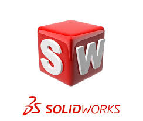
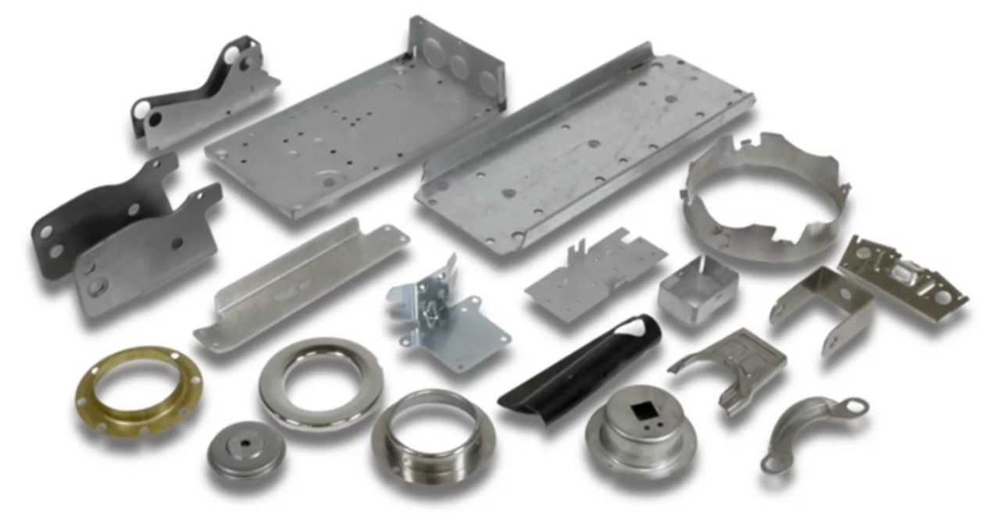
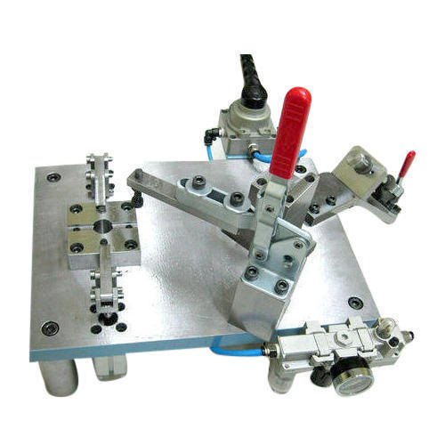
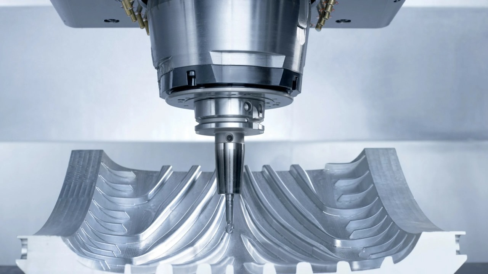
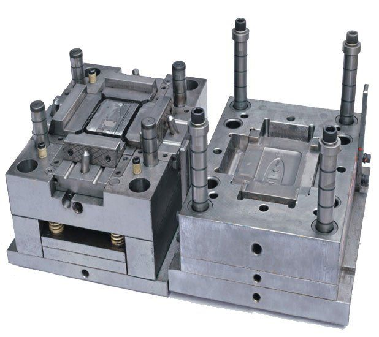
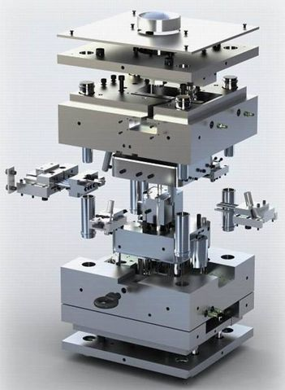
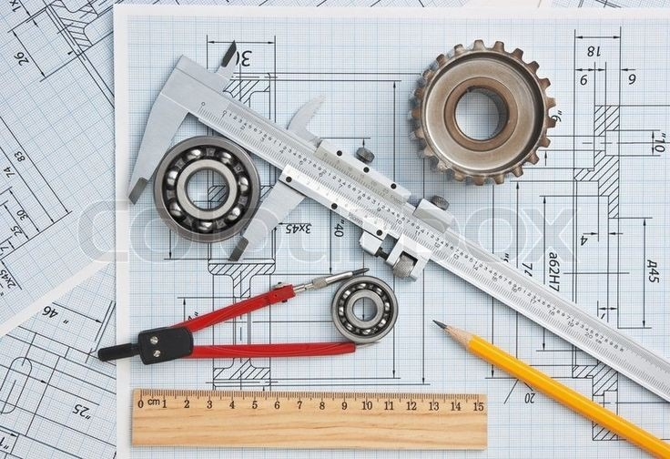
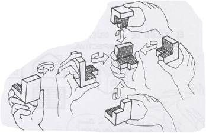
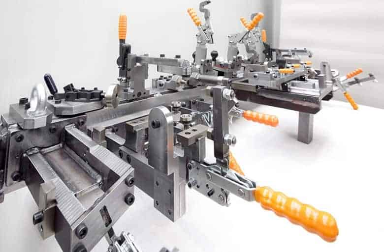
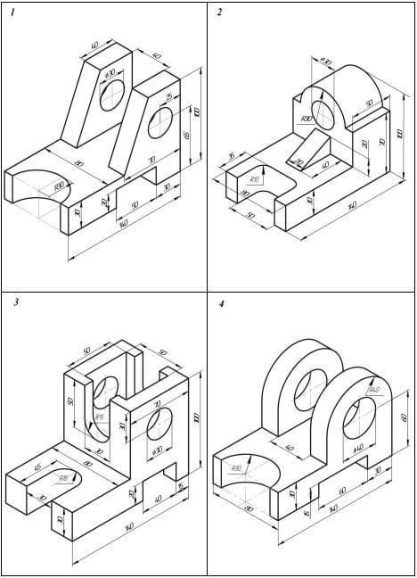
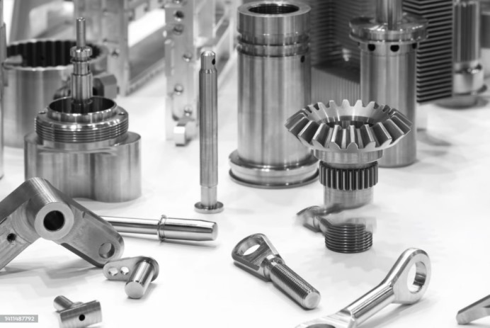
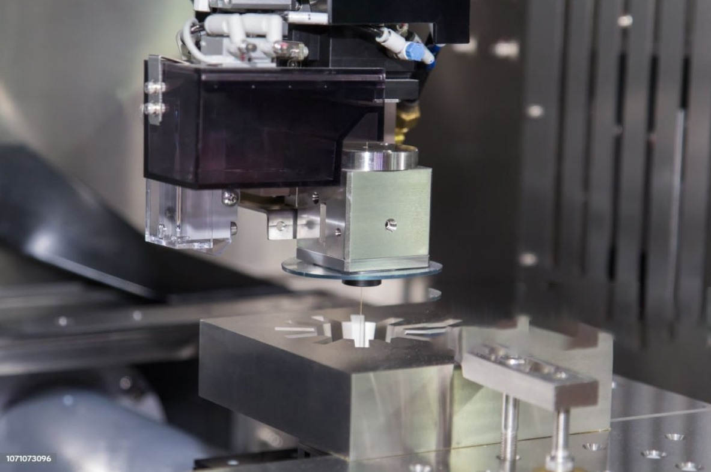
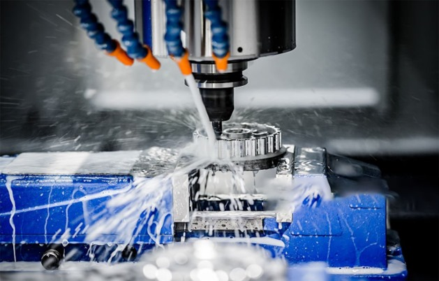
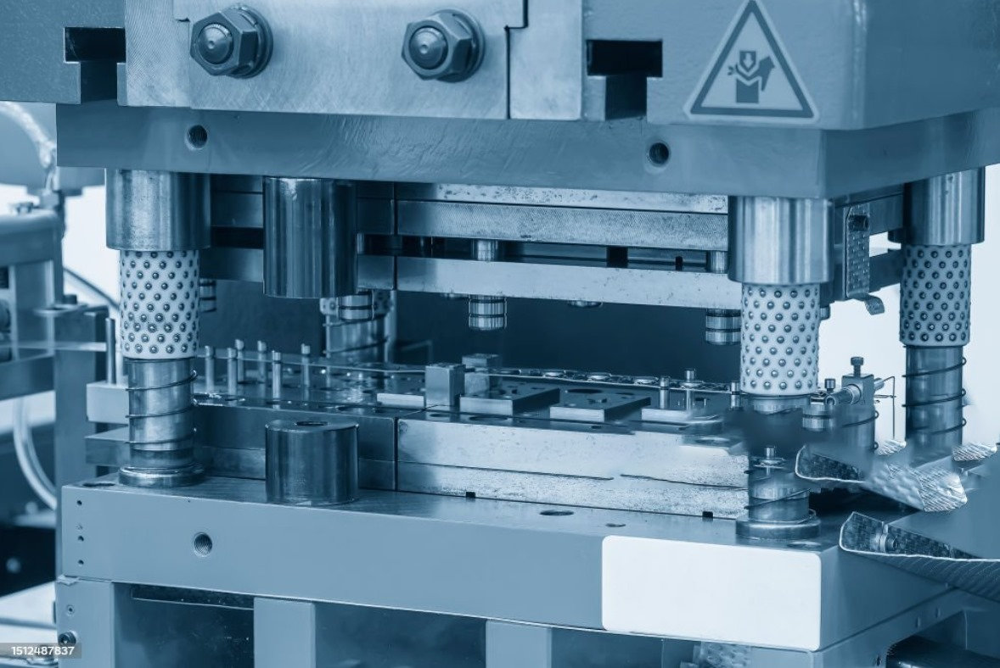
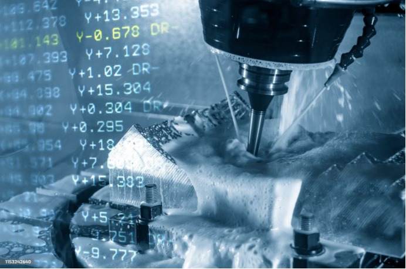
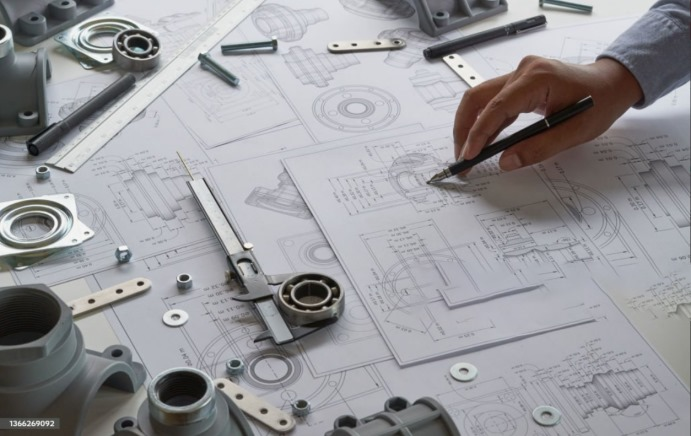
Product Development Process
1
Conceptual Design
Broad ideas and brainstorming, sketching. Initial phase of design process.
2
Prototyping
Creating a preliminary version of product or system to test its functionality, design, and usability.
3
Detailed Design
Creating detailed drawing, schematics, and documentation.
4
Validation
Testing, analysis, and user feedback to ensure that design meets user needs, functional requirements, and quality standards.
5
Optimization
Analyzing various factors such as performance, cost, time, and resources to identify areas for improvement.
6
Production
May include sourcing materials, fabrication, assembly, quality control, and logistics to ensure that the final product meets desired standards.


 3 MonthCAD/Sheet Metal Die Design
3 MonthCAD/Sheet Metal Die Design